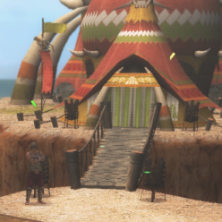

The Caravan Area or Pallone is located next to the town entrance, entering the area needs you to be Hunter Rank 17, the area itself contains all facilities related to Caravan Quests, Caravan Gems and Raviente.
Before doing anything Caravan related you should obtain a Caravan Gem. This can be done by simply entering the Caravan area and talking to Kashira, the woman near the Bonfire. After talking to her you will have a new icon next to your name of a random colour, this is your Caravan Gem.


The main Caravan Quests play out in a similar way to the standard quest progression in the mainline games. You must complete all of the courses in a star rating and then an urgent quest to advance to the next star rating.
The quests themselves play out in a similar manner to the Epic Hunting Quests in the other games, the main difference is that you will fight each Large Monster in separate zones and you may have the option to take a break between hunts. Doing anything at all notable in a quest earns you CP, this includes carving, gathering, killing monsters and breaking parts.
In contrast to standard quests, Monsters generally have a lot less health but hit substantially harder than their normal quest counterparts. All sequential quests must be done with the same equipment and item pool, the only way to get more items is if you return to town when offered the chance or have a mission on the Pallone Hot Air Balloon, where you can talk to the male npc on the deck and spend CP earned on items such as potions etc.
You can obtain a Caravan or Hunter Gem as soon as you hit HR2, you can do this by simply entering the Caravan area (Pallone) and approaching the bonfire. This will automatically force you to take a Caravan Gem and assign your first colour.
To actually equip your caravan skills you simply need to use a box which lets you change equipment and choose 變更裝備 > 裝上獵人珠技能 which will bring up the skill equipping menu. You can equip up to 3 skills worth a total of 10 points, activated skills turn orange.
 Gem Colours (PP)
Gem Colours (PP)There are eight possible colours that your gem can be and seven that can be assigned to monsters, these are Peach (桃), Brown (荼), Yellow (黃), Green (綠), White (白), Purple/Blue (紫), Cyan (水) and Rainbow (虹). Each day at 12:00 TW time the game will roll your gem and monster colours and choose one of the previous colours at random. Only your own gem can be Rainbow.
When you go on quests you will get extra points in these colours (PP) based upon the colour of the monster and your own gem as well as those of anyone who joins you. All of the colours add to their own pool except Rainbow which adds to all colours, prior to G10 only one Rainbow gem was taken into account and they did not stack. I have no information on the state of this since G10 launched.
You obtain colours simply from having a Hunter Gem at all and hunting things. The colours you gain are based on the Species of Monster being fought and you will gain a single point in the colour you have assigned from any gathering quest. You can check the currently assigned colours on each by choosing the 獵人珠情報看板 option at the board next to the blacksmith in town.
If you have the colour assigned to the monster on that day active you will gain double PP by hunting it. If you have a Rainbow Gem you will gain a number of PP in all colours. You should strive to always have Rainbow active if grinding colours for this reason.
The most important thing for efficient grind of Colours is to have a Rainbow Gem. Getting points in all colours reduces the number of quests required by a huge amount, even if you min-maxed colours to get double each quest you would still need to do 3.5x the number of quests compared to simply having a Rainbow Gem.
Getting the Rainbow Gem is pretty simple, as long as you are subbed you can opt to change to a Rainbow Gem at any time by talking to the Gem Smith in the Caravan Hut and simply select 獵人珠顏色變更 followed by 變更為虹色！ to instantly get a Caravan Gem. This costs either 40,000 CP or is Free on Premium. This makes Colour Grind pair especially well with Hiden Grind as you will want to always be on Premium for the latter.

Outside of the Rainbow Gem there are a number of things that can further multiply the amount of PP you gain per quest, the easiest and most immediate thing is the Colour Charm (獵人之護符【珠】) which is available on the Combination NPC in exchange for Medals. You gain 1x Medal every time you have killed 10x of a single Monster Type and require 40 Medals for this charm. It is recommended to use this alongside one of the Impatience charms to reduce wait time from quests while simply grinding colours.
After the Charm you can also utilise the Elder Medicine Buff which applies a further 1.5x multiplier to the Colours gained. This is applied automatically once a month based on a schedule but can be forced at any time by simply paying 100,000 CP to the elder at the top of the Caravan Hut.
The final free option for increasing Colour gains is the Hunter Soul Sigil (獵人魂) which simply adds +1 to colours when used on a quest. This is available on the White Monoblos B and Yian Garuga ★ recipes and can simply appear on any Sigil with a random chance. Although the gains are not large it adds up if you have a Rainbow gem and is included in the pool for additional colours based on the above buffs.
As with most grinds you can also simply use the Premium Course to aid in acquiring colours. Premium applies a flat 2x multiplier to all Colour gain as well as making the Rainbow Gem completely free.
The actual best way to grind out colours is simply stacking as many of the above buffs to colour gain as possible and doing either Map Deliveries or Iron Ore Deliveries. There are map deliveries in a bunch of sections but the Iron Ore deliver is in the HR1 quests section titled 獵人的基本，採掘！. Iron Ore has the benefit of allowing you to carry a 99 stack and do the quest 33 times without breaks or even accessing the supply box. It also applies towards unlocking the Green Armour Colour and is probably the most efficient way of obtaining it. Iron Ore is named 鐵礦石 and can be bought for 5 GCP or 5 Festi Points.
You can rank up your gem by filling all colours to capacity, total capacity is based upon the level of your gem. This starts at 1 and can be increased when you first hit the cap on total colour PP. The table below shows the total number:
| Level | Starting Points | Ending Points | Points to Max |
| Level 1 | 0 | 259 | 259 |
| Level 2 100,000 CP to upgrade | 259 | 962 | 703 |
| Level 3 200,000 CP to upgrade | 962 | 1739 | 777 |
| Level 4 500,000 CP to upgrade | 1739 | 2516 | 777 |
| Level 5 1,000,000 CP to upgrade | 2516 | 3330 | 814 |
| Level 6 1,500,000 CP to upgrade | 3330 | 4181 | 851 |
| Level 7 2,000,000 CP to upgrade | 4181 | 5296 | 1115 |
| Level 8 2,500,000 CP to upgrade GR700 Required | 5296 | 7047 | 1751 |
| Level 9 3,000,000 CP to upgrade GR800 Required | 7047 | 8484 | 1437 |
As soon as all 7 colours are at the cap (259 in each colour for level 1 for example) you can visit the Caravan Gem Smith and rank up your gem, this is covered in his section below.
Doing the Normal Caravan Routes is a solid way to get a chunk of CP, it's recommended that you finish up the 7☆ Caravan Quests to unlock the Limited Routes, though only the person posting the quests needs to have accomplished this and anyone can join the limited quests as long as someone has them available to post at all.
Limited routes rotate in and out on a relatively fixed schedule that can be viewed in the Google Doc, keep in mind this may desync if there has been a recent large patch and that the days start from 12:00 midday, this means that even if it's the 21st and that it's listed as being available on the 21st it will actually be available 12:00 on the 21st through 11:59 on the 22nd.
Within the Limited Routes there is a quest line with all three types of Fatalis. This is the best option for CP grind. You will want to make a set with Carving and High Speed Gathering to maximise returns while also using a G Finesse weapon if you have them available.
Be careful when killing the various Fatalis as it is entirely possible to end up with multiple carve zones clipping terrain after their death animation.
G Rank Caravan Routes were added in Z2.3, these are solid alternatives if you don't want to grind out the normal quests and just want bursts of CP. These will average somewhere between 50,000 and 90,000 CP a run with variable times and the most profitable taking beyond that of a Fatalis Trio.
As mentioned above one of the Limited Routes that can up any given day is all three HR Fatalis.
Doing a Fatalis Trio will take around 10 minutes will net you in the region of 100~150k Caravan Points per run, the total points varies based on total carves and what you roll points wise per carve. CP gain is multiplied if you take a G Finesse weapon (1.20x) and by being on Premium (3.00x).
Being on premium will also multiply damage dealt by you and your legendaries by 1.25x, making the kills faster and allowing you to carve more carves in general. Naturally the more carves you get increases the total you end up with after the 3.0x multiplier. If you roll an hour on the Daily Bonus, using it for the purpose of grinding the Fatalis quest for CP is a solid way to go. This comes out as around 600,000 to 900,000 CP an hour or 1.8 to 2.7 million an hour on Premium.
While the Log In Boost effect does not add to the CP gained in caravan, the extra carves on higher levels will obviously add additional CP to your final total. This can potentially ensure you get extra carves if a carving hitbox ends up clipping into terrain but is probably better used elsewhere.
The other easy option for CP gain is simply participating in Raviente Hunts. This is not an ideal option unless you can find a bunch of people who want to farm Raviente materials or CP and it is especially ill advised to try and do any Berserk Raviente without being properly geared (which involves already having a decently ranked up Caravan Gem).
Doing Raviente will earn 140~200k per Raviente slain which takes around 30 minutes per one. this is around 280 ~ 400k an hour with additional benefits. I am not actually sure if premium boosts this, but I believe it is at least 2.0x.
Limited Routes are on a fixed cycle, the cycle below is based on the historical route cycles and will be monitored. It is matching up as of the 22nd July 2017.
| Expected Fatalis Trio Dates can be found in the gdoc under Caravan Schedule. |
Caravan skills are additional skills that you gain as you rank up your Caravan Gem, they are similar to the food skills from the mainline series. There are two types of Caravan Skill, passive and active.
Passive Skills are always on, an example of one of these skills is Negotiation (殺價交涉術【X】) depending on the level of the negotiation skill you have you will have 1/8th chance to get a discount of up to 25% on anything that would consume Zeny or GZeny. This includes crafting and upgrading equipment as well as buying items, anything that would consume money.
Active Skills are user set skills with an associated cost, you can have up to 10 points worth of skills active. Examples of these skills are Courage, Weapon Arts and KO Technique.
Skills marked in red are very notable and recommended depending on what weapon you are using and your own personal play style.
| Skill Name (CH) | Skill Name (EN) | Cost | Skill Description | Points to Unlock |
| 醫療術 | Recovery Items Up | 1 | Herb, Potion, Mega Potion and Lifepowder effect 1.1x 100% Bitterbug and Antidote Herb effectiveness | 0 |
| 鈍器毆打術 | Blunt Striker | 1 | Bowgun Melee damage up (3x) | 1 |
| 膽量 | Courage | 1 | No flinching upon spotting monsters | 37 |
| 著地術 | Lander | 2 | No recovery time after falling, no egg loss on falling | 74 |
| 攀籐蔓超人 | Vine Superhero | 3 | No stamina is consumed while climbing | 111 |
| 採掘達人 | Mining Expert | 3 | Pick break rate down | 148 |
| 捕蟲達人 | Insect Expert | 3 | Net break rate down | 185 |
| 攀籐蔓達人 | Vine Master | 3 | Getting hurt while climbing will not cause you to fall | 222 |
| 調合術 | Combination Technique | 1 2 3 | 10/15/20% additional combination success rate (Small / Medium / Large) | Small: 555 Medium: 1221 Large: 1998 |
| 起身術 | Riser | 1 2 3 | 1.5x/2.0x/3.0x iframes during the rising animation after taking a hit. (Small / Medium / Large) | Small: 592 Medium: 1258 Large: 2035 |
| 萬能園地名人 | My Tore Celebrity (Pugi Farm) | Auto | Garden managers affection goes up 1.5x/2x/3x usual values (Small / Medium / Large) | Small: 629 Medium: 1295 Large: 2072 |
| 終極自然回復術 | Natural Recovery | 8 9 10 | Using the 'Sleep' gesture will cause your red health to refill 5/10/15 times (Small / Medium / Large) | Small: 666 Medium: 1332 Large: 2109 |
| 剝取達人 | Master Carver | 8 9 10 | While carving if you roll the top item in the carve table and it is below 51% you have a set chance of rerolling with that item removed from the carving pool. 1/10th 1/9th or 1/8th chance of rerolls (Small / Medium / Large) 10, 15 and 20 maximum triggers. (Small / Medium / Large) e.g. if you carve a G Rank Gravios body and get the top carve at 55% it does not get rerolled but G Rank Gravios Tails top carve is 49% and would be rerolled. | Small: 703 Medium: 1369 Large: 2146 |
| 暗藏回復術 | Secret Healing Technique | 3 4 5 | 1/12th, 1/11th or 1/10th chance of not consuming healing items when used. (Small / Medium / Large) (Up to 5 times a quest) | Small: 740 Medium: 1406 Large: 2183 |
| 殺價交涉術 | Negotiation | Auto | 1/8th chance to get a 10%/15%/25% discount on buying things. | Small: 777 Medium: 1443 Large: 2220 |
| 展示間名人 | Gallery Celebrity | Auto | 5000/7000/10000 extra Gallery Points on evaluations | Small: 814 Medium: 1480 Large: 2257 |
| 花園名人 | Garden Celebrity | Auto | 1.2x/1.3x/1.5x items receieved from garden tools | Small: 851 Medium: 1517 Large: 2294 |
| 最終王牌 | Last Minute Ace | 5 6 7 | In the last 5 minutes of a quest you get 80%/90%/100% affinity but take 1.3x damage | Small: 888 Medium: 1554 Large: 2331 |
| 女神的幸運 | Goddess of Luck | 8 9 10 | Chance to take no damage on hits (Stacks with Divine Protection, Diva Buff and Girly Charms) Small: 1/10th chance 5 times Med: 1/9th chance 10 times Large: 1/8th chance 20 times | Small: 925 Medium: 1591 Large: 2368 |
| 自然達人【暑】 | Hot Master | 5 | Grants the effects of Heat Cancel. | 1646 |
| 自然達人【寒】 | Cold Master | 5 | Grants the effects of Cold Cancel. | 1664 |
| 武器術 | Weapon Art | 5 6 7 | Adds an amount of your equipped weapons true raw as a buff. Small: 1.01x Attack on all weapons Medium: 1.025x Attack on all weapons Large: 1.05x Attack on all weapons | Small: 1702 Medium: 2479 Large: 3256 e.g. SnS with 700 Raw has 500 True Raw which adds an addition 25 True Raw for 735 total attack. |
| 附贈技術 | Bonus Art | 5 | Food Effect is not lost after fainting | 3293 |
| ＫＯ術 | KO Technique | 3 | Increases stun damage dealt by 1.1x. Stacks with Sigil. | 3459 |
| 舞蹈術 | Art of Dancing | 2 | Using the 'Dance' action will give +10 attack for one minute. Uses the same buff slot as Power Seeds etc. | 3718 |
| 動搖的守護 | Unstable Defender | 3 4 5 | 90% reduction of damage and 20/25%/50% chance of no damage while blocking | Small: 3829 Medium: 4680 Large: 5531 (GR700) |
| 奮起的攻擊 | Rousing Attacker | 3 4 5 | Attacking a monster while you have 50 or lower health a 40% chance to cause you to regain 10 HP. Cannot trigger more than once every 10 seconds. Maximum activations varies by skill rank. Small: 10 times Medium: 15 times Large: 20 times | Small: 3940 Medium: 4791 Large:~6100 (On GR700) |
| 剎那的守護 | Perfect Defense | 1 2 3 | Blocking within 3/4/4 frames of an attack hitting you will cause no stamina or sharpness loss and prevent knockback and allow you to immediately evade after the block. The Large verison of the skill adds a Reflect effect with greater power than Reflect+3 when you perfectly block anything (Motion Value of 72, no elemental, no critical hits) | Small: 4050 Medium: 4901 Large: 6016 (GR700) |
| 復仇！ | Revenge! | 3 4 5 | After getting up from a hit there's a chance to gain 25 attack, 50 defense and no minor knockback for 20 seconds. Counted as a Power Pill for terms of buff effects and does not overlap | Small: 4144 Medium: 4995 Large: 6100 (GR700) |
| 暴擊 | Shooting Rampage | 7 | Bowgun and Bow get an additional 1.1x of your equipped weapons true raw as a buff, for bowguns accuracy immediately after shooting is lowered by 1.5x e.g. Bow with 600 Raw has 500 True Raw which adds an addition 50 True Raw for 660 total attack. | 4421 |
| 食堂的常客 | Cafeteria Regular | Auto | Chance to not consume food when preparing buffs for a quest. | ~5530 (GR700) |
| 調合名人 | Combination Celebrity | 2 | Combining items has a chance to produce double the usual results quantity wise. | ~6220 (GR700) |
| 野生的覺醒 | Wild Awakening | 6 | Combination of both Hot and Cold Master skills. | 7200 |
| 覺絕的獵技 | Decisive Hunter | 7 | Combination of Weapon Art [Med] and KO Technique | 7700 |
| 瞬斷的態勢 | Instant Guard Stance | 6 | Combination of Weapon Art [Med] and Perfect Defense [Med] | 8075 |
| 護身術 | Self-Defense | 8 | Combination of Weapon Art [Med] and Unstable Defender [Med] | 8075 |
| 覺悟的態勢 | Prepared Stance | 3 | If you perform the gesture 應戰準備 <act20> for around 30 seconds the attack ceiling on your currently equipped weapon type increases for a fixed duration. | 7700 |
| 補翼之矛 | Spear Angel | 3 | Increases the amount of damage dealt by Ballistas when playing support on Berserk Raviente. | 7380 |
| 補翼之盾 | Shield Angel | 3 | Decreases the amount of damage taken when playing support on Berserk Raviente. | 7200 |
| 精銳的練氣 | Elite Flame | 2 | Increases the Friendly Fire (heat up) meter over time instead of by friendly fire when fighting Berserk Raviente | 7380 |
Generally speaking it's recommended to match your skills to weapon and the quests you will be doing. If you are fighting Raviente or Duremudira you almost always want Bonus Art, Hammers and Tonfa will always massively benefit from KO Technique and Weapon Art or Shooting Rampage provide a buff based on your weapon's base true raw that gets multiplied by everything such as Adrenaline or Combat Supremacy and can easily start adding up.
The Active Skills are rather powerful and as they don't take up the same slots as normal skills there is no reason to ever have them disabled, it's very much worth ranking up your Caravan Gem to get things as powerful as 5-10% extra true raw on your weapons and the retainment of food buffs.
Gems need to be regularly maintained to keep their skills active, this can be done by simply choosing the Maintain Gem (獵人珠保養) option on the Gem Smith, this is completely free but needs to be done every 30 days to avoid decay and skill deactivation
Upgrading your gem can be done after you have hit the cap for your current level in every colour by choosing the Upgrade Gem (獵人珠強化) option on the Gem Smith. This will simply upgrade your gem to the next level and allow you to start gaining Colour PP again. New skills will unlock naturally as you raise all colours and old skills are retained.
You can change the colour of your Hunter Gem by choosing the Change Gem Colour (獵人珠顏色變更) option, within this you will have two option to choose from:
Randomised Gem Colour (變更為隨意顏色！) - Exactly what you'd expect, changes the active colour of your gem.
Rainbow Gem Colour (變更為虹色！) - Forces your gem to become a Rainbow gem, granting points in all colours.
By spending Lottery Coins you can add +100 PP to colours. This is almost certainly a giant waste of money over simply utilising premium to grind while having a Rainbow Gem. Unless you instantly want to get points and have a huge excess of money to throw at it this option should be ignored.
If your caravan gem is below level 8 you will have less pages. Regardless, The skills that you do have access to will be sorted in the same order as the below.
The Pioneering System is functionally a customisable version of a standard map in which you set up specific facilities to develop the map and enable gathering of both extra and exclusive materials.
The system is mostly obsolete but has two big uses. The first is to simply have easier than usual quests available for grinding out Ribbons or Merits at G Rank. The second, and most important, is simply increasing the number of Contribution Points while participating in a Raviente. Having a Level 5 Pioneer Map grants an additional 50,000 P per Raviente ran. This is an entire extra phase, or almost two or three broken parts depending on Ravi type worth in terms of points and is very notable.
This functionality is accessed at the Cat behind Kieru in the Caravan Pallone area.
Not yet written in full but mostly obvious. Choose a map spot, choose a balloon type and then choose the level to work on. After the upgrade is queued go into Migration and use the 150,000 option to instantly finish the upgrade and then repeat back and forth.
A Lv5 flag is granted based on the total number of levels you have, with each level having a different weighting. By utilising the Snowy Mountains as your final location you can get the requirements for a Lv5 flag earlier than if you finished anywhere else.
Lv5 Requirements:
Getting a Lv5 flag requires a certain number of points, for normal maps this is 51 and for Snowy Mountains this is 41.
Level 3 facilities are worth 10 points, Level 2 are worth 5 points and Level 1 are worth 1 point.
Specifically, the Snowy Mountains needs:
10x Lv3 Facilities
5x Lv2 Facilities
1x Lv1 Facility
If you want to move to another location you will need to get at least 10 extra points to count as Lv5.
Materials:
6.5 ~ 9 million CP
Snowy Mountains Lv1:
Silver Cordgrass (銀米草) ×10 (Buyable) (80x)
Paintberry (染色果實) ×10 (Buyable) (80x)
Huskberry (空心果實) ×10 (Buyable) (80x)
Jungle Lv1 (All Buyable):
Blue Mushroom (青菇) ×10 (Buyable) (80x)
Day Herbs (太陽草) ×10 (Buyable) (80x)
Sunset Herb (落陽草) ×10 (Buyable) (80x)
Snowy Mountains Lv2:
Purse Grass (布包草) ×5 (Snowy Lv1 Gathering, doubled in Mocha pots) (40x)
Sleep Herb (眠草) ×5 (Buyable) (40x)
Armour Seed (忍耐種子) ×5 (Buyable) (40x)
Desert Lv2:
Utility Grass (雜用草) ×5 (Desert Lv1 Gathering, Caravan Festival) (30x)
Dragon Toadstool (風茄) ×5 (Buyable) (30x)
Sliced Cactus (薄片仙人掌) ×5 (Buyable) (30x)
Snowy Mountains Lv3:
Overturned Grass (翻面草) ×5 (Snowy Lv2 Gathering)
Cracked Pot (破掉的壺) ×10 (Pickled Purse Grass, doubled in Mocha pots)
Dandelion (七色蒲公英) ×5 (GCP, Non-Pioneer gathering)
Jungle Lv3:
Yellow Flower (黃果花) x5 (Desert Lv2 Gathering, Caravan Festival)
Silky Grass (沙沙草) x5 (Snowy Lv2 Gathering, Jungle Lv2 Gathering)
Exciteshroom (心跳加速菇) x5 (Normal gathering)
Desert Lv3:
Yellow Flower (黃果花) x5 (Desert Lv2 Gathering, Caravan Festival)
Silky Grass (沙沙草) x5 (Snowy Lv2 Gathering, Jungle Lv2 Gathering)
Exciteshroom (心跳加速菇) x5 (Normal gathering)
Desert Lv3:
Black Sesame Mushroom (黑芝麻菇) x5 (Jungle Gathering)
Demon Cactus Flower (鬼仙人掌的花) (Desert Lv2 Gathering)
Dandelion (七色蒲公英) ×5 (GCP, Non-Pioneer gathering)
Process:
1) Select Snowy Mountains as your main base location and create a gathering facility on any map spot
2) Select Jungle in Migration and then choose the first 70,000 CP option, this will skip the waiting period and instantly complete the lv1 Upgrade.
3) Select any other spot in the Jungle and start making a facility there and then migrate back to the Snowy Mountains. Do not use Areas 9 and 10! They do not exist in the snowy mountains and as such will be wasted.
4) Repeat steps 2 and 3 until you have Lv1 collection bases in all zones in the snowy mountains
5) Use a Pioneering Quest to go and gather Purse Grass (布包草) until you have enough and queue the first lv2 upgrade.
6) Migrate from Jungle to Desert using the third 150,000 CP option, as before this skips the waiting period and instantly upgrades to Lv2. If you have enough Utility Grass (雜用草) immediately start an upgrade migrate back, otherwise go and gather some in the new desert pioneer quest until you have enough. Repeat until you have everything at Lv2.
(Use a combination of the two options belowas suits your needs and materials possessed)
7a) Use Mocha pots to mass produce Cracked Pots while gathering Overturned Grass (翻面草). Queue an upgrade, migrate to any location with the 150,000 CP option and immediately migrate back.
7b) Swap between the Snowy Mountains, Jungle and the Desert depending on the materials you already have while doing the appropriate gathering to upgrade each until you get a level 5 flag.
You can use the Gook Mocha Pots to convert 1x Purse Grass (布包草) into 2x by cooking it for 3 quests (Green) or into a Cracked Pot (破掉的壺) by cooking it for 6 quests.